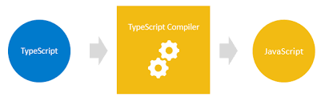

Typescript 
Prepared by volhabukhal
for RS2021Q3
Belarus, 2022
What does typescript is?
TypeScript is JavaScript with syntax for types
The history of appearance
Starts developing in 2012
by Anders Hejlsberg creater of C# language
- From the beginning is devoloping as OpenSource
- Start spreading out quickly due to flexibility and performance
- Popularity growth -> many projects migrate to TypeScript
 was written in typescript from the beginning
was written in typescript from the beginning
Why do we need TypeScript?
TypeScript allows to find the errors before you run the program
TypeScript implements the main concepts of object-oriented languages
TypeScript allows to create complicated programs quicker --> simpler, easier for refactoring the code
TypeScript is openSource and available on GitHub
TypeScript supports modern features (arrow functions, let, const)
How to use?
Browsers don't understand Typescript
npm -install typescript --save-dev
create tsconfig.json file
compile with command:
tsc or tsc--watchTypes in Typescript
Typescript has all available in JS types and some extra features (enum, interfaces, tuples etc)
Boolean
let isComplited: boolean = true;Number
let year: number = 2022;
let bit: bigint = 100n;
String
let school: string = 'The Rolling Scopes School';
Types in Typescript
Array
const lavels: string[] = ['stage0', 'stage1', 'stage2'];
const lavels: Array<string> = ['stage0', 'stage1', 'stage2'];
Tuple
//Declare a tuple type
let course: [string, number];
//Initialize
course = ['Frontend', 2022];
//Initialize incorrectly
course = [2022, 'Frontend']
// Error: TS2322: Type 'string' is not assignable to type 'number'
// Error: TS2322: Type 'number' is not assignable to type 'string'
Types in Typescript
Numeric enums
enum Direction {
Up,
Down,
Left,
Right,
}
let arrow: Direction = Direction.Up;
String enums
enum Direction {
Up = "UP",
Down = "DOWN",
Left = "LEFT",
Right = "RIGHT",
}
let arrow: Direction = Direction.Up;
Types in Typescript
Any
✕ Make type checking unuseful
Unknown
✓ require type checking
Void
✓ absence of having any type at all
Functions in Typescript
Function return void
function hello (){
console.log("Hello TypeScript");
};
let message: ()=>void = hello;
message();Function return value
function sum (x: number, y?: number): number {
return x + y;
};Arrow function
let sum = (x: number, y: number) => x + y;
let result = sum(10, 20); // 30Objects and interfaces in Typescript
//Anonymous
function greet(person: { name: string; age: number }) {
return "Hello " + person.name;}//Interface
interface Person {
name: string;
age: number;
speak(a: string): void;
}
function greet(person: Person) {
return "Hello " + person.name;
} //Interface with optional properties
interface Person {
name: string;
age?: number;
gender?: string;
} //Extending Types
interface BasicAddress {
name?: string;
street: string;
city: string;
country: string;
postalCode: string;
}
interface AddressWithUnit extends BasicAddress {
unit: string;
}//Type alias
type Person = {
name: string;
age: number;
};
function greet(person: Person) {
return "Hello " + person.name;}//Type union
type alphanumeric = string | number;
let code: alphanumeric;
code = 123; // OK
code = "ABC"; // OK
code = false; // Compiler Error
//Union of two types
type Developer = {
devName: string
}
type Tester = {
testerName: string
}
type Employee = Developer | Tester
Types vs interfaces
| Property | Types | Interfaces |
|---|---|---|
| Unions | ✓ | ✕ |
| Tuple types | ✓ | ✓ but unclear |
| Functions | ✓ | ✓ but seems tricky |
| Declaration merging | ✕ | ✓ |
| Intersection | ✓ | ✕ |
| Inheritance | ✕ | ✓ |
When should to choose Typescript
| Simple project | + | - |
|---|---|---|
| Middle project | + | + |
| Complicated project | - | + |